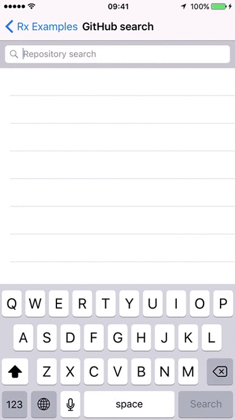

RxSwift: ReactiveX for Swift
RxSwift: ReactiveX for Swift


ReactiveX（简写: Rx） 是一个可以帮助我们简化异步编程的库。
它拓展了观察者模式。使你能够自由组合多个异步事件，而不需要去关心线程，同步，线程安全，并发数据以及I/O阻塞。
RxSwift 是 Rx 的 Swift 版本。
它尝试将原有的一些概念移植到 iOS/macOS 平台。
你可以在这里找到跨平台文档 ReactiveX.io。
Like the original Rx, its intention is to enable easy composition of asynchronous operations and event/data streams.
用法
| 用例 | 结果 |
|---|---|
| 搜索 Github 的库... |  |
let searchResults = searchBar.rx.text.orEmpty
.throttle(0.3, scheduler: MainScheduler.instance)
.distinctUntilChanged()
.flatMapLatest { query -> Observable<[Repository]> in
if query.isEmpty {
return .just([])
}
return searchGitHub(query)
.catchErrorJustReturn([])
}
.observeOn(MainScheduler.instance) |
|
| ... then bind the results to your tableview | |
searchResults
.bind(to: tableView.rx.items(cellIdentifier: "Cell")) {
(index, repository: Repository, cell) in
cell.textLabel?.text = repository.name
cell.detailTextLabel?.text = repository.url
}
.disposed(by: disposeBag) |
KVO observing, async operations and streams are all unified under abstraction of sequence. This is the reason why Rx is so simple, elegant and powerful.